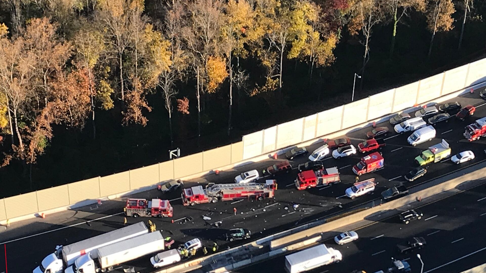
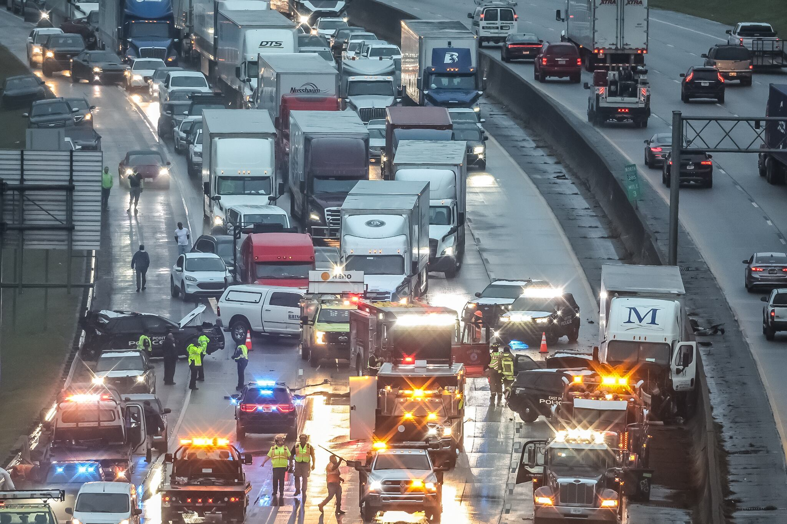
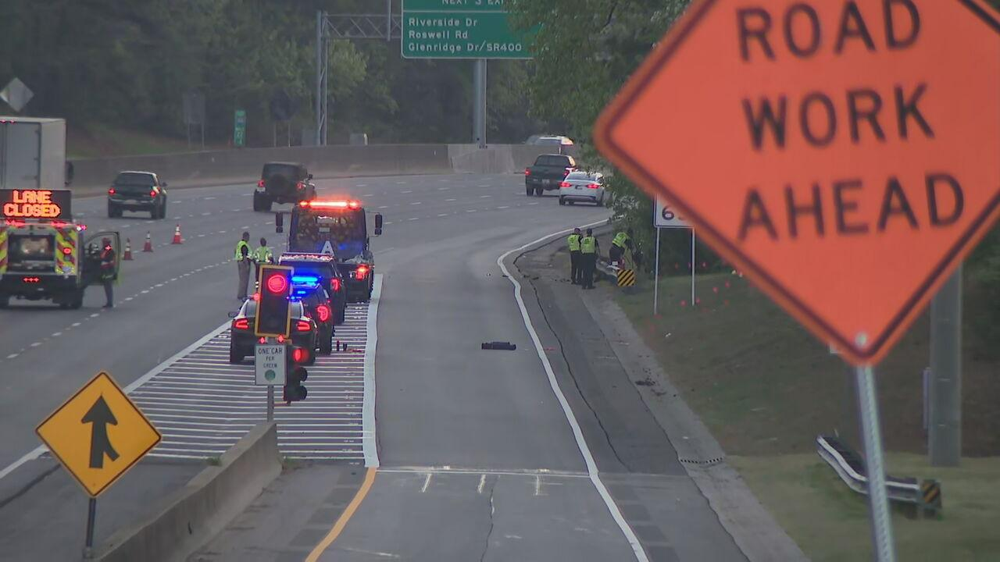

Which Atlanta
highway would
you avoid?
When we hear about crashes, we remember where they happen most often. However, raw numbers aren't the whole story.
Headlines leave a lasting impression.



These stories stay with us because they happen frequently, are dramatic, and are vivid. The more we hear about crashes on certain roads, the more dangerous those roads can feel.
Let's map out each reported crash in 2023 to see where crashes pile up.
Based on this map alone, which highway would you avoid?
Replace with an interactive map of raw crash counts. Hover or tap a location to reveal the total number of crashes and the fatal crash count.
Planned interaction: map zoom + hover/tap tooltips. Values will be populated from the cleaned dataset.
The psychology of making data decisions
You just made a quick judgment from the information in front of you. Psychologists often describe this kind of intuitive thinking as System 1.
It is susceptible to cognitive biases like availability bias. Availability bias can influence our judgments when memorable events are easier to recall than less dramatic information.
System 2 is less susceptible to biases and encourages us to slow down, question our assumptions, and examine what the data might be missing.
Let's put your System 2 thinking to work.
Atlanta commuters feel like driving during rush hour is the most dangerous.
Initially, the crash data seems to agree. Switch between the two views to challenge your first impression.
Interactive 7 × 24 heatmap placeholder. Compare weekday and hour patterns; hover/tap cells for precise totals and fatal counts.
Toggle changes the intended metric, not real values yet. Both metrics and tooltips will use the final dataset.
Accounting for traffic gives us a more complete picture.
Notice how some hours have a higher crash frequency relative to how many vehicles are on the road.
Dual line chart placeholder. Hourly crash counts overlaid on hourly vehicle counts across a 24-hour day, so peaks in crashes can be compared against peaks in traffic volume. Hover/tap an hour for exact values.
Toggle switches between raw counts and the exposure-adjusted rate (crashes per 100,000 vehicle passages). Values will be populated from the cleaned dataset.
First impressions can be misleading.
Now let's revisit our initial map. After dividing crashes by traffic volume to be more risk-relative, our rankings change.
Replace with labeled geographic highway routes and an obvious highest-ranked corridor. Toggle to exposure-normalized fatal crash rates to reveal how rankings change.
Use a consistent exposure unit (e.g., fatalities per 100 million vehicle-miles traveled) and disclose any unmatched data. The metric toggle is functional UI scaffolding only.
There’s more to road safety.
Zoom out from a single ranking. Explore the structure of crash outcomes and compare crash density by highway to put the earlier patterns into context.
Interactive corridor-density chart placeholder. Hover/tap to inspect the highway, crash count and density value.
Interactive icicle chart placeholder. Hover/tap each segment for exact category and crash count.
To make better data decisions, don't just count crashes, count the context.
What caught my attention?
Notice when a memorable event or striking visualization shapes your first impression.
What is actually being measured?
Ask whether you're seeing a raw count, a rate, or something else entirely.
What context might be missing?
Consider traffic exposure, severity, time, and other relevant factors before drawing conclusions.
Our minds bring assumptions and cognitive biases into every decision.
System 2 thinking encourages us to pause, examine the evidence, and question what our first impressions may have overlooked.